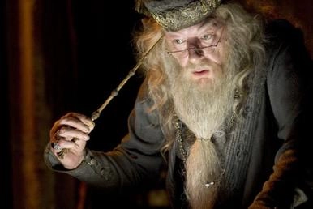

ჰარი პოტერი (ინგლ. Harry Potter) — ჯოან როულინგის მიერ დაწერილი 7-ნაწილიანი ფენტეზის ჟანრის წიგნების სერია. იგი ჰარი პოტერის, ახალგაზრდა ჯადოქრის თავგადასავლებს ასახავს და ძირითადად ბავშვებისთვისაა განკუთვნილი. წიგნი მთელ მსოფლიოშია ცნობილი და უამრავ ენაზეა თარგმნილი, მათ შორის ქართულადაც. დიდი პოპულარობით სარგებლობს წიგნის ეკრანიზაციაც.
ჰარი პოტერი ერთი უცნაური თვისებების მქონე ობოლი ბიჭია, რომელიც დარსლების ოჯახთან, დეიდასთან და ბიძიასთან ერთად ცხოვრობს ქალაქ ლითლ უინგში, პრაივიტ დრაივის #4 სახლში. ყველაფერი ერთ ჩვეულებრივ დღეს დაიწყო, როდესაც ჰარიმ, რომელსაც დეიდას და ბიძიას გარდა არავინ ჰყავდა, წერილი მიიღო, თუმცა მისი წაკითხვა ვერ მოასწრო, რადგან ბიძიამ წაართვა. ამის შემდეგ სახლში წერილების ნამდვილი წვიმა წამოვიდა, რასაც დარსლები ჰარისთან ერთად ერთ მიყრუებულ კუნძულზე გაექცნენ. ეს სწორედ ჰარის მე-11 დაბადების დღემდე რამდენიმე დღით ადრე მოხდა. ჰარის დაბადების დღეზე კი მასთან მივიდა ნახევრად გოლიათი ჰაგრიდი და უთხრა, რომ იგი ჯადოქარია. უამბო თავისი მშობლების გარდაცვალების ნამდვილ მიზეზზეც, ისინი კი თავისი დროის უდიდესმა ბოროტმა ჯადოქარმა, ლორდმა ვოლდემორმა დახოცა. მან ჰარის მოკვლაც სცადა, თუმცა უშედეგოდ. ჰარისთვის წერილი გამოგზავნილი იყო ჯადოქრობისა და მაგიის სკოლა ჰოგვორტსიდან. ამის შემდეგ ჰარი ჰოგვორტსში წავიდა სასწავლებლად და იქ ბევრი მეგობარი შეიძინა. ბიჭი მიხვდა, რომ ის თავის სამყაროში აღმოჩნდა, იქ მას ყველა იცნობდა და ყველა პატივს სცემდა, რადგან ის ერთადერთი ადამიანი იყო, ვინც ბოროტ ძლევამოსილ ჯადოქარ, ვოლდემორს წინ გადაუდგა და დაამარცხა ჯერ კიდევ მაშინ, როდესაც ის ჩვილი იყო. ჰარის ამ ამბიდან არაფერი ახსოვდა, თუმცა მის სხეულზე დარჩენილი ნაიარევი ამას ადასტურებდა. ის თუ რატომ სურდა ვოლდემორს ჰარის მოკვლა, ირკვევა წიგნის მეხუთე ნაწილში ჰარი პოტერი და ფენიქსის ორდენი. საბოლოოდ ჰარი შეძლებს ვოლდემორის დამარცხებას, ამას იგი თავის მეგობარ რონთან და ჰერმიონთან ერთად მოახერხებს. მათ შეძლეს და გაანადგურეს ვოლდემორის მიერ შექმნილი ჰორკრუქსები, სადაც მისი სულის ნაწილები იყო განთავსებული.
ალბუს პერსივალ ვულფრიკ ბრაიან დამბლდორი (ინგლ. Albus Percival Wulfric Brian Dumbledore,1881-1997) — „ჰარი პოტერის“ სამყაროს პერსონაჟი. ჰოგვორტსის დირექტორი და უძლიერესი ჯადოქარი. იგი განსაკუთრებულად ცნობილი იყო იმით, რომ 1945 წელს დაამარცხა ბოროტი ჯადოქარი გრინდელვალდი. ალბუსი მასთან თავდაპირველად მეგობრობდა, თუმცა ერთ-ერთი ინციდენტის შემდეგ ისინი დაშორდნენ. გრინდელვალდმა ცხოვრების „ბოროტი“ გზა აირჩია, ხელში ჩაიგდო დიდგულას ჯოხი, სიკვდილის ერთ-ერთი საჩუქარი და თითქმის უძლეველი გახდა, სანამ დამბლდორმა არ დაამარცხა.
დამბლდორი ცნობილია დრაკონის სისხლის გამოყენების 12 ხერხის აღმოჩენით და ალქიმიური ნაშრომების გამოქვეყნებით ნიკოლას ფლამელთან ერთად. როდესაც ალბუსი ჰოგვორტსში სწავლობდა, მამამისი აზკაბანში, ჯადოქრების ციხეში ჩასვეს სამ მაგლზე თავდასხმის გამო. ლორდ ვოლდემორს მხოლოდ დამბლდორის ეშინოდა. უნდა აღინიშნოს, რომ ალბუსი ყოველთვის უარს ამბობდა მაგიის მინისტრობაზე, იცოდა რომ მის ხელში ძალაუფლება არ უნდა ყოფილიყო და ყველა სხვა თანამდებობას ჰოგვორტსის დირექტორობა ერჩივნა. თუმცა იგი ყოველთვის იდეალურად აკონტროლებდა სიტუაციას და გარშემომყოფებს — იმდენად, რომ საკუთარი მკვლელობაც თვითონ მოაწყო.
